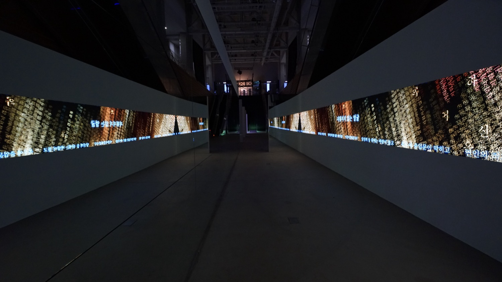
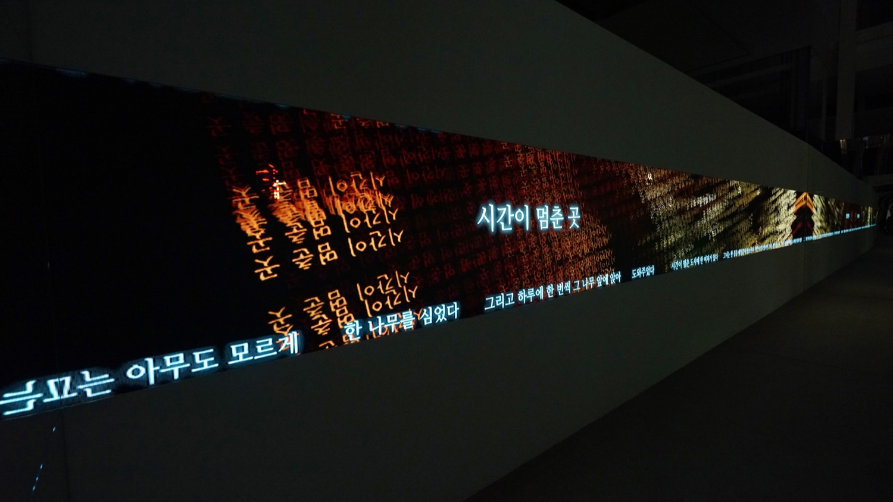
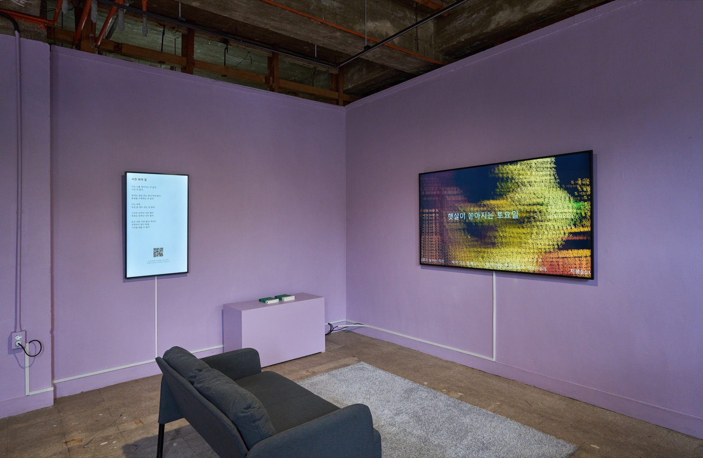
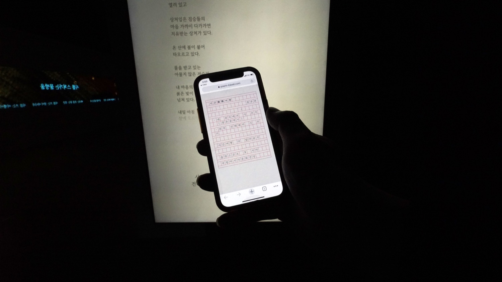
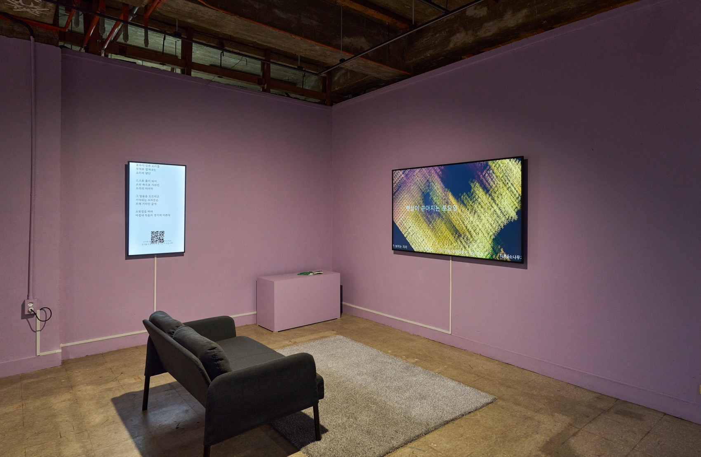

Exhibition — 2023
Poem Travel시간詩間여행 · APAP7 · Slitscope
시(詩)와 시(詩)의 사이, 그 시간(詩間)을 관객들이 여행한다 — 시 쓰는 인공지능 시아와 함께하는 도시의 시간여행.
Between poem and poem — the audience travels the 시간(詩間), the ‘space between poems,’ with the poetry-writing AI SIA.
‘시간詩間여행(Poem Travel)’은 슬릿스코프의 시 쓰는 인공지능 시아(SIA)와 관객이 함께 만드는 관객참여형 작품입니다. 관객은 전시장의 QR코드로 접속해 모바일에서 시아와 대화하며 ‘나에게 들려주는 시 쓰기’에 참여합니다 — 위치 정보 기반으로 지역의 문화·인물·역사에서 시상(詩想)을 길어 올린 시들이 도시 위에 맵핑되고, 관객이 시아와 함께 지은 시들은 다시 전시장의 데이터 시각화로 흘러듭니다. 도시(都市)의 도시(都詩)화 — 도시가 시가 되는 과정입니다.
안양파빌리온의 설치는 두 겹으로 이루어집니다. 시아가 쓴 시의 문장들이 데이터의 결 위로 흐르는 영상 패널, 그리고 소파에 앉아 시집을 읽듯 참여하는 방 — 관객은 화면 속 시를 눈으로 여행하고, 손안의 모바일로 자신의 시를 짓습니다.
‘Poem Travel’ is a participatory work made together by the audience and Slitscope’s poetry-writing AI, SIA. Visitors join through a QR code and converse with SIA on their phones, writing a poem addressed to themselves; poems drawing their imagery from local culture, figures and history are mapped over the city by location, and the poems visitors write with SIA stream back into the gallery’s data visualisation — the city (都市) becoming a city of poems (都詩). The Anyang Pavilion installation is twofold: video panels where SIA’s lines drift across currents of data, and a room where one participates as if reading a poetry book on a sofa — travelling the poems on screen with the eyes, composing one’s own in the palm of the hand.
- 작가
- Artists
- 슬릿스코프 (김제민 · 김근형)
- Slitscope (Kim JaeMin · Kim KeunHyoung)
- AI
- AI
- 시아(SIA) — 한국 근현대시 약 1만 2천 편으로 학습(2021), 카카오브레인 KoGPT(60억 파라미터·2천억 토큰) 기반으로 재개발(2022). 시집 《시를 쓰는 이유》 출간, 시극 《파포스》 발표.
- SIA — trained on some 12,000 Korean poems (2021), rebuilt on Kakao Brain’s KoGPT (6B parameters, 200B tokens, 2022); published the collection ‘Reasons for Writing Poems’ and the poetry-play ‘Paphos.’
- 관련 작업
- Related works
- 시작하는 아이 (2021) · Paphos (2022) · Poem Travel 2.0 (2024)
- 키워드
- Keywords
- SIA · participatory · GPS poem mapping · data visualisation
전시 기록 — 안양파빌리온, 2023
Exhibition record — Anyang Pavilion, 2023



